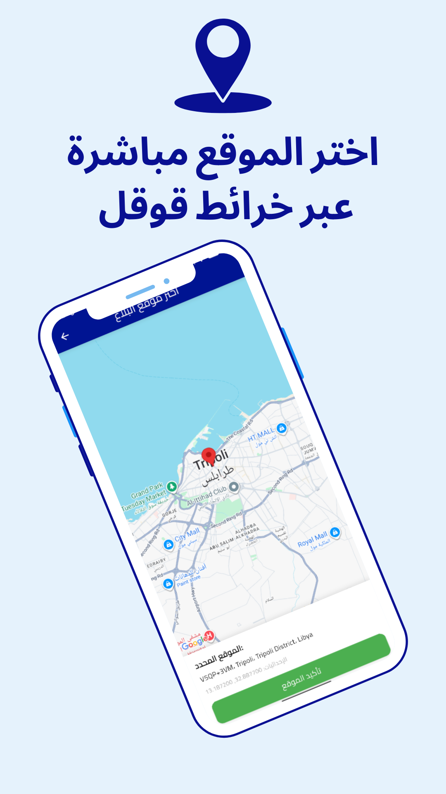

بلّغ بسرعة… وساهم في تحسين المجتمع
تطبيق هاتف ذكي يتيح للمواطنين إرسال بلاغات عن مشاكل الخدمات العامة (طرق، إنارة، نظافة، صرف صحي وغيرها) مع تحديد الموقع وإرفاق صورة، ليصل البلاغ للجهة المختصة لمراجعته ومعالجته.


تطبيق هاتف ذكي يتيح للمواطنين إرسال بلاغات عن مشاكل الخدمات العامة (طرق، إنارة، نظافة، صرف صحي وغيرها) مع تحديد الموقع وإرفاق صورة، ليصل البلاغ للجهة المختصة لمراجعته ومعالجته.
